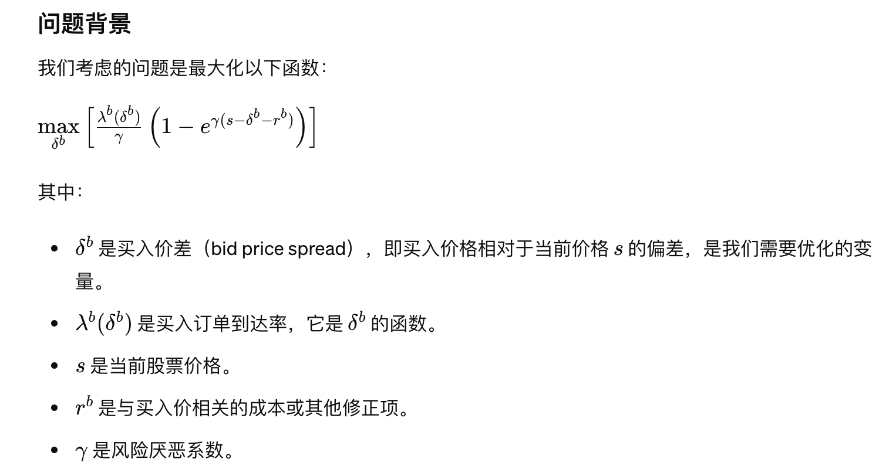
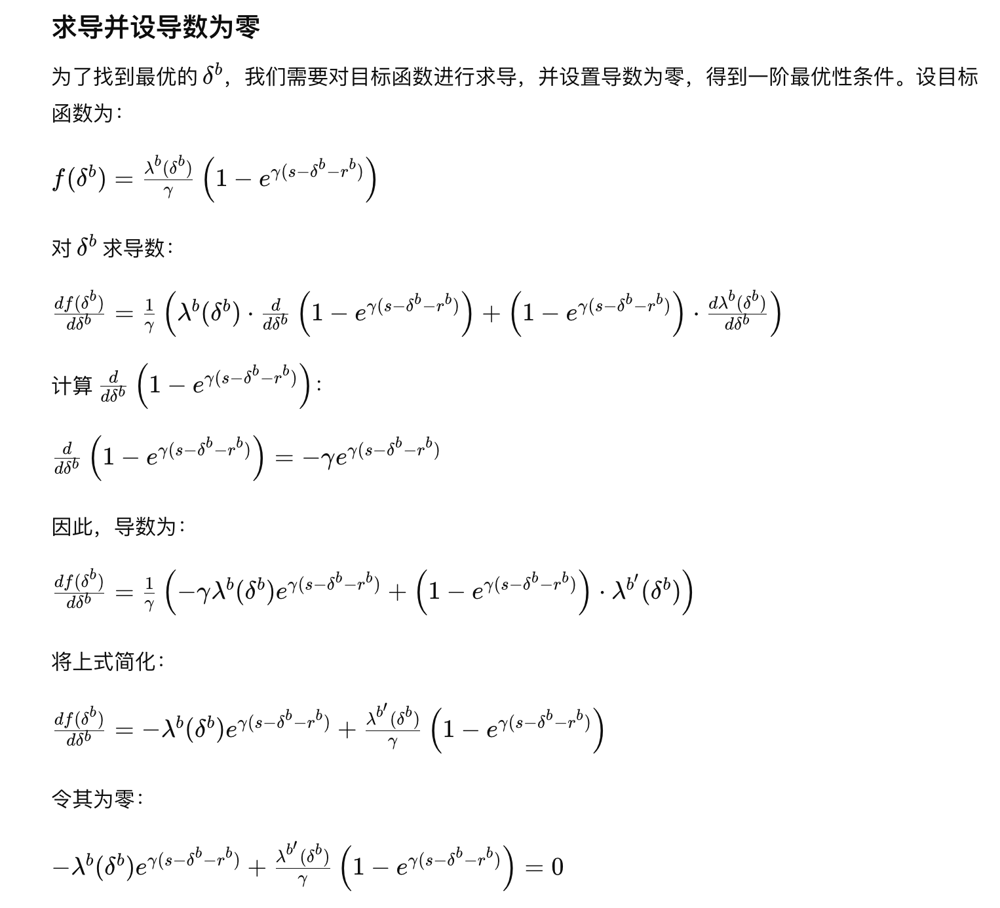
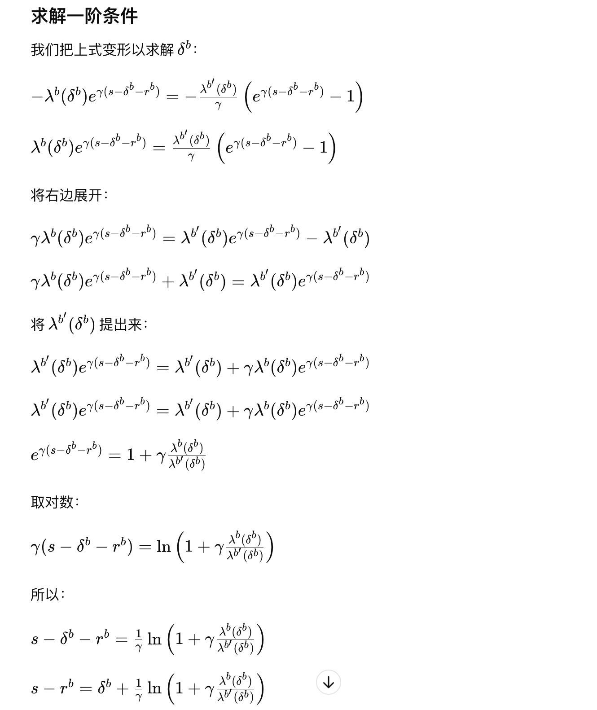

Avellaneda-Stoikov Model - Part3#
Note
Key equation!
Hamilton–Jacobi–Bellman equation#
Recall that our agent’s objective is given by the value function
where the optimal feedback controls \(\delta^{a}\) and \(\delta^{b}\) will turn out to be time and state dependent. We can use the dynamic programming principle to show that the function \(u\) solves the following Hamilton–Jacobi–Bellman equation
Note
\(u(s, x, q, t)\) 描述了在给定当前状态下（包括时间 \(t\)、库存 \(q\)、现金 \(x\) 和价格 \(s\)）的最大期望效用，可以使用动态规划的方法建立从 \(t\) 到 \(t+\Delta\) 的递推方程：
Proof. 当 \(\Delta{t}\) 足够小时
设 \(\lambda^{a}(\delta^{a})\) 和 \(\lambda^{b}(\delta^{b})\) 分别是卖出和买入事件的到达率，则在 \(\Delta{t}\) 内，卖出和买入事件发生的概率分别是 \(\lambda^{a}(\delta^{a})\Delta{t}\) 和 \(\lambda^{b}(\delta^{b})\Delta{t}\)（忽略卖出和买入多次的情况）。
卖出事件发生的增量：
\(u(s, x+s+\delta^{a}, q-1, t) - u(s,x,q,t)\)买入事件发生的增量：
\(u(s, x-(s-\delta^{b}), q+1, t) - u(s,x,q,t)\)
因此：
另一方面，对 \(u\) 进行泰勒展开：
其中 \(\Delta{s}=\sigma\Delta{W_{t}}\) 是随机变量，由于 \(\Delta{W_{t}}\sim\mathcal{N}(0, \Delta{t})\)，所以 \(\mathbb{E}[(\Delta{W_{t}})^{2}] = \Delta{t}\)，\(\mathbb{E}[(\Delta{s})^{2}] = \sigma^{2}\Delta{t}\)，而 \(\mathbb{E}[\Delta{s}]=0\)。取期望：
合并两方面：
Transformation of HJB equation#
The solution to this nonlinear PDE is continuous in the variables \(s\), \(x\) and \(t\) and depends on the discrete values of the inventory \(q\). Due to our choice of exponential utility (指数效用函数), we are able to simplify the problem with the ansatz
Direct substitution yields the following equation for \(\theta\):
Applying the definition of reservation bid and ask prices to the ansatz, we find that \(r^{b}\) and \(r^{a}\) depend directly on this function \(\theta\). Indeed
is the reservation bid price of the stock, when the inventory is \(q\) and
is the reservation ask price, when the inventory is \(q\). From the first-order optimality condition, we obtain the optimal distances \(\delta^{b}\) and \(\delta^{a}\). They are given by the implicit relations
and
Tip
Proof:

Tip

Tip

In summary, the optimal bid and ask quotes are obtained through an intuitive, two-step procedure.
First, we solve the PDE in order to obtain the reservation bid and ask prices \(r^{b}(s,q,t)\) and \(r^{a}(s,q,t)\).
Second, we solve the implicit equations and obtain the optimal distances \(\delta^{b}(s,q,t)\) and \(\delta^{a}(s,q,t)\) between the mid-price and optimal bid and ask quotes..